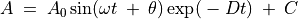

Vitesse angulaire d’un pendule¶
Objectif
Étudier la nature des oscillations d’un pendule. Un encodeur angulaire est nécessaire pour mesurer le déplacement angulaire en fonction du temps. Mais en utilisant un moteur à courant continu comme capteur, on peut mesurer la vitesse angulaire en fonction du temps.

Procédure
- Attacher un quelconque de pendule rigide à l’axe du moteur.
- Connecter le moteur entre A3 et GND
- Connecter une résistance de
 entre Rg et GND
entre Rg et GND - Mettre le pendule en oscillation et DÉMARRER la numérisation
Discussion
Le signal obtenu est montré sur la figure. Quand on le modélise par une équation , à l’aide de Grace, on a obtenu une fréquence angulaire de .
Il convient de réaliser le pendule avec une masselotte assez lourde et une tige légère qui la relie à l’axe du moteur. Dans ce cas, le moteur à courant continu se comporte en générateur et la tension est proportionnelle à la vitesse angulaire.